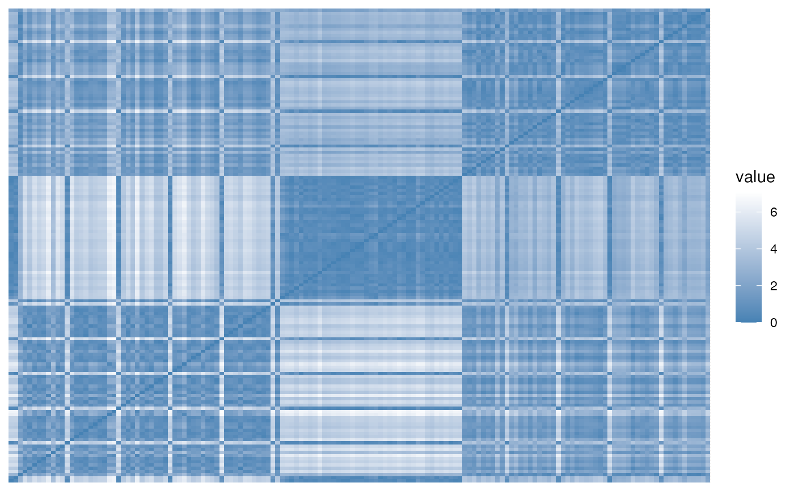
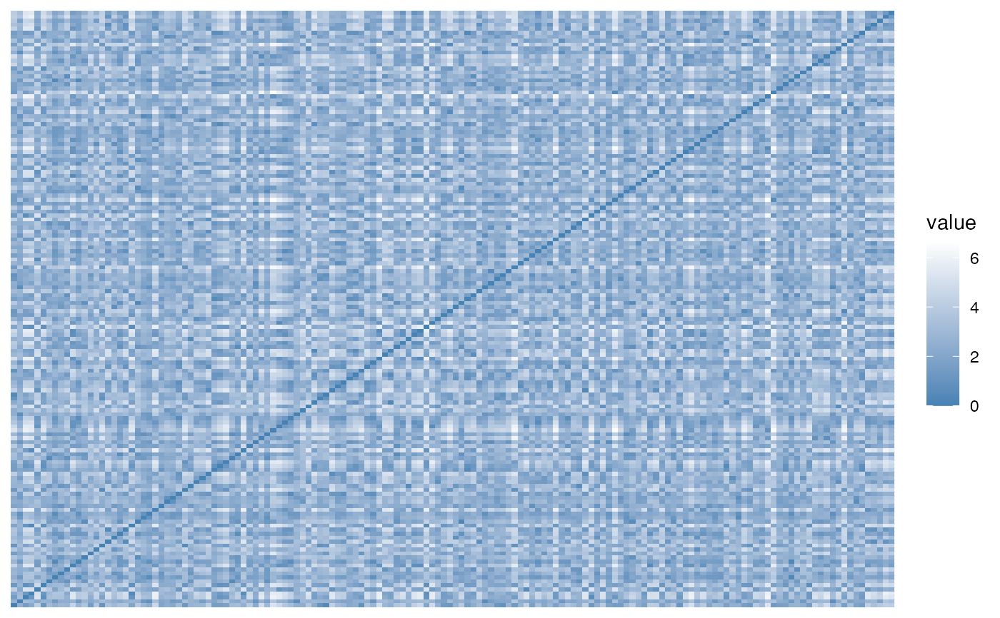

Before applying cluster methods, the first step is to assess whether the data is clusterable, a process defined as the assessing of clustering tendency. get_clust_tendency() assesses clustering tendency using Hopkins' statistic and a visual approach. An ordered dissimilarity image (ODI) is shown. Objects belonging to the same cluster are displayed in consecutive order using hierarchical clustering. For more details and interpretation, see STHDA website: Assessing clustering tendency.
get_clust_tendency(
data,
n,
graph = TRUE,
gradient = list(low = "red", mid = "white", high = "blue"),
seed = NULL
)a numeric data frame or matrix. Columns are variables and rows are samples. Computation are done on rows (samples) by default. If you want to calculate Hopkins statistic on variables, transpose the data before.
a positive integer specifying the number of points selected from sample space and from the observed data. Must be smaller than the number of complete observations.
logical value; if TRUE the ordered dissimilarity image (ODI) is shown.
a list containing three elements specifying the colors for low, mid and high values in the ordered dissimilarity image. The element "mid" can take the value of NULL.
an integer seed for reproducibility, or NULL to use the current RNG stream. When non-NULL, the function restores the caller RNG state on exit.
A list containing the elements:
- hopkins_stat for Hopkins statistic value
- plot for ordered dissimilarity image. This is generated using the
function fviz_dist(dist.obj).
Hopkins statistic: If the value of Hopkins statistic is close to 1 (far above 0.5), then we can conclude that the dataset is significantly clusterable. The statistic is calculated using the correct formula from Cross and Jain (1982) with exponent d=D where D is the dimensionality (number of columns) of the data. Under the null hypothesis of spatial randomness, the Hopkins statistic follows a Beta(n, n) distribution.
Note on interpretation: This function returns the Hopkins statistic H
where values close to 1 indicate clusterable data. Some other packages (e.g.,
performance::check_clusterstructure) return 1-H, where values close to
0 indicate clusterability. Always check the documentation of the specific
implementation you are using.
Breaking change: factoextra uses the corrected Hopkins statistic
formula (Wright 2022). Results differ from legacy factoextra and a one-time
warning is emitted. Set options(factoextra.warn_hopkins = FALSE) to
silence the warning.
For large datasets, nearest-neighbor distances are computed with a low-memory
fallback when the full pairwise matrix would exceed
getOption("factoextra.hopkins.max_matrix_cells", 2e7) cells.
VAT (Visual Assessment of cluster Tendency): The VAT detects the clustering tendency in a visual form by counting the number of square shaped dark (or colored) blocks along the diagonal in a VAT image.
data(iris)
# Clustering tendency
gradient_col = list(low = "steelblue", high = "white")
get_clust_tendency(iris[,-5], n = 50, gradient = gradient_col)
#> Warning: Hopkins statistic uses the corrected formula (Wright 2022); results differ from legacy factoextra. Set options(factoextra.warn_hopkins = FALSE) to silence this warning.
#> $hopkins_stat
#> [1] 0.9944812
#>
#> $plot

#>
# Random uniformly distributed dataset
# (without any inherent clusters)
set.seed(123)
random_df <- apply(iris[, -5], 2,
function(x){runif(length(x), min(x), max(x))}
)
get_clust_tendency(random_df, n = 50, gradient = gradient_col)
#> $hopkins_stat
#> [1] 0.5817278
#>
#> $plot

#>